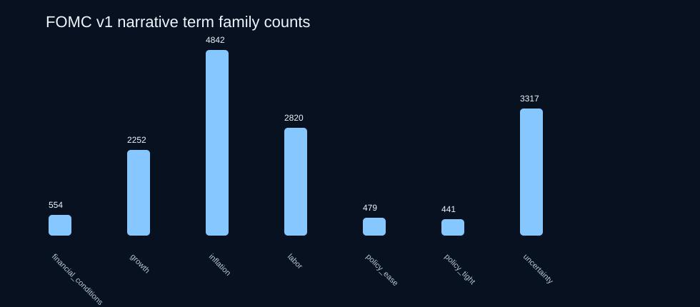

Macro Narrative Premium Signal Kit
Launch price: $39. Built to feel like a $390 analyst starter pack. Real FOMC text data, engineered narrative features, signal recipes, QA scripts, charts, prompt pack, memo template, and a premium research notebook.
For macro researchers who want to test public-text narrative ideas without spending the first week scraping, cleaning, documenting, feature-engineering, and setting leakage guards.
87 FOMC documents2021-01-27 → 2026-04-29engineered feature store12 signal recipesLLM prompt packauditable URLsno alpha promises
Get the $39 launch deal Download free sample View source manifest Read sample QA reportWhy it is a steal at $39
Designed to replace the first chunk of paid analyst work: source collection, cleaning, schema, features, QA, prompts, charts, and notebook setup.
Use it immediately instead of burning days to build a trustworthy starting dataset and leakage-safe feature workflow.
Launch price for the full premium kit. The price can rise once demand is proven.
What is inside the paid v1.1 premium bundle
cleaned FOMC documents: 44 statements and 43 minutes.
signal recipes with feature formulas, candidate markets, and validation guardrails.
narrative families: inflation, labor, growth, policy tight/ease, uncertainty, financial conditions.
Buyer promise
The pain
Before testing macro text ideas, researchers burn time on source discovery, HTML cleaning, date alignment, provenance notes, schemas, feature scoring, prompts, charting, and leakage-safe notebook setup.
The shortcut
The premium kit gives you full cleaned text rows, source URLs, engineered feature rows, a regime timeline, signal recipes, prompt pack, QA report, proof charts, and notebook scaffolding so you can start researching immediately.
Premium proof charts



Paid v1.1 files
| File | Purpose |
|---|---|
fomc_documents_v1.tsv | 87 full cleaned FOMC statement/minutes rows with date, URL, title, document type, text, excerpt, word/token counts, tags, and provenance note. |
narrative_term_scores_v1.tsv | Rule-based narrative term counts and per-1k-word intensities for each document. |
fomc_meeting_features_v1_1.tsv | Engineered feature store: hawkish/dovish spread, inflation-labor balance, uncertainty/financial-conditions pressure, z-scores, deltas, and regimes. |
regime_timeline_v1_1.tsv | Chronological timeline for joining to market/economic data with leakage notes. |
signal_recipes_v1_1.tsv | 12 concrete research recipes with formulas, candidate markets, and validation guardrails. |
macro_narrative_premium_notebook_v1_1.ipynb | Starter notebook for loading, ranking, splitting, and charting features. |
RESEARCH_PLAYBOOK_v1_1.md | 7-day implementation path, use cases, leakage traps, and validation guidance. |
PROMPT_PACK_v1_1.md | LLM prompts for policy tone and narrative labeling with JSON schema. |
RESEARCH_MEMO_TEMPLATE_v1_1.md | Analyst memo template for turning source rows into publishable research notes. |
QA_REPORT_v1_1.md + scripts/qa_v1_1.py | Buyer-verifiable QA checks. |
charts/ | SVG charts for fast inspection and report reuse. |
Free sample
The free sample remains available so buyers can inspect the schema, source posture, and chart style before buying. The full paid kit is distributed only through Gumroad.
Download free sample v0.1 View sample rowsPrice
Macro Narrative Premium Signal Kit v1.1
Launch deal for the full premium kit: data, feature store, signal recipes, playbook, prompts, memo template, QA, charts, and notebook.
Buy on GumroadFuture price path
Once demand is proven, this can become a higher-priced kit with BEA/BLS/Treasury modules, richer notebooks, and team licenses. Current buyers get the steal price.
Not investment advice
This is a research workflow/data product, not a signal guarantee, investment advice, or promise of returns. It packages auditable public text and examples so buyers can do their own research faster.